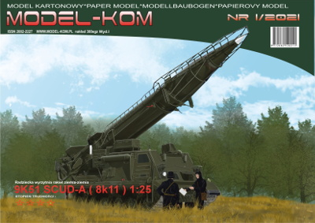
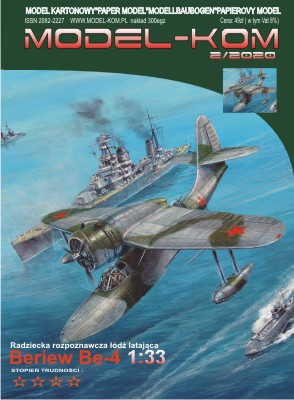
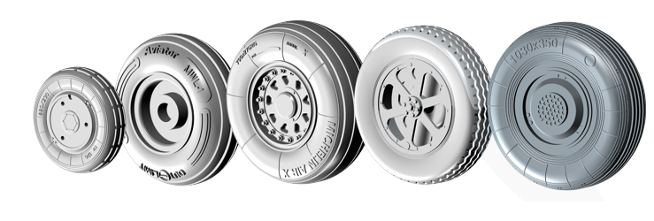
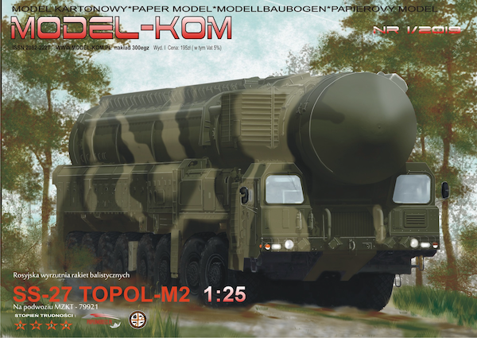

Zapraszamy do naszego nowo uruchomionego sklepu http://sklep.model-kom.pl a w nim nasza nowość
-
Sr-71
Opracowanie modelu - Karol Ciesielski Okładka - Łukasz Kasperczyk Model posiada dokładnie opracowane wnętrza Model wysyłany będzie po 20maja wszystkie zdjęcia dodatków takich jak lasery, kalkomanie, żywiczne koła, pilot sa w naszym sklepie http://sklep.model-kom.pl Oczywiście jak ktoś chce zamówić tradycyjnie zapraszam biuro@model-kom.pl
-
Be-12 1:33
 Więcej
tutaj
Więcej
tutaj
-
Po dłuższym czasie wracamy z nowością . Chcieliśmy na gwiazdkę ale nie możemy tego obiecać ,że model pojawią sie u nas , a co dopiero u Was w domach . Dlatego model będzie dostępny w drugim tygodniu stycznia. Model radzieckie wyrzutni rakiet SCUD -A Ceny dodatków i modelu wkrótce. Więcej o dodatkach i zdjęcia, druku , iinstrukcji i modelu testowego oraz ceny tutaj . Model muszę jeszcze pomalować i poskładać w całość. Jak zawsze jest możliwość zamówienia modelu z dedykowaną okładką. Poniżej okładka
 -
ZAPRASZAM DO ZAKŁADKI WASZE MODELE
Są nowe galeria łuny , topola , mig'aE8 ,Kruga, OsyNOWOŚĆ
Radziecka rozpoznawcza łódź latająca Beriew Be-4 Model posaida wnętrze kabiny pilotów oraz strzelca ogonowego W modelu opracowano podwozie . Autor opracowanie K. Ciesielski Okładka - Łukasz KasperczykWięcej TUTAJ -
Wznawiamy 9p113 Łuna-M . Nakład tylko 100 egz. druk offset Poprawiłem to co wiedziałem , że jest do poprawy . W modelu znajdziecie kolorowe obrazy pokazujące prowadzenie przewodów w modelu, reszta instrukcja standardowa -rysunki kreskowe . . Do modelu są dostępne 3 rodzaje laserów - podstawowy cena 70zł . waloryzujący 45zł i koła 80zł, kalkomanie 78zł. Cena modelu 109zł. Modele będziemy rozsyłać od poniedziałku.... preferujemy paczkomaty. Przy zakupach powyżej 150 zł wysyłka na koszt wydawnictwa . Zamówienia biuro@model-kom.pl lub FB lub telefonicznie 600938729
Więcej szczegółów tutaj

-
Wprowadziliśmy kilka nowych dodatków do modeli samolotów oraz nowe rodzaje
imitacji śrub i nakrętek . Więcej informacji pod linkiem - zdjęciem

-
Model rosyjskiej wurzutni rakiet:
SS-27 Topol M2 na podwozi MZKT-79221
Skala modelu 1:25 . pełne wnętrze
więcej tutaj
-
Kilka nowości żywicznych : Do 2k12 KUB koła oraz gąsienice --> więcej TUTAJ Żywiczne koła do PZL I-22 IRYDA w skali 1:33 cena kompletu 22zł Żywiczne koła do Su-22 w skali 1:33 cena kompetu 22zł Żywiczna imitacja nakrętki motylkowej 66szt cena 15zł
{kind=link}